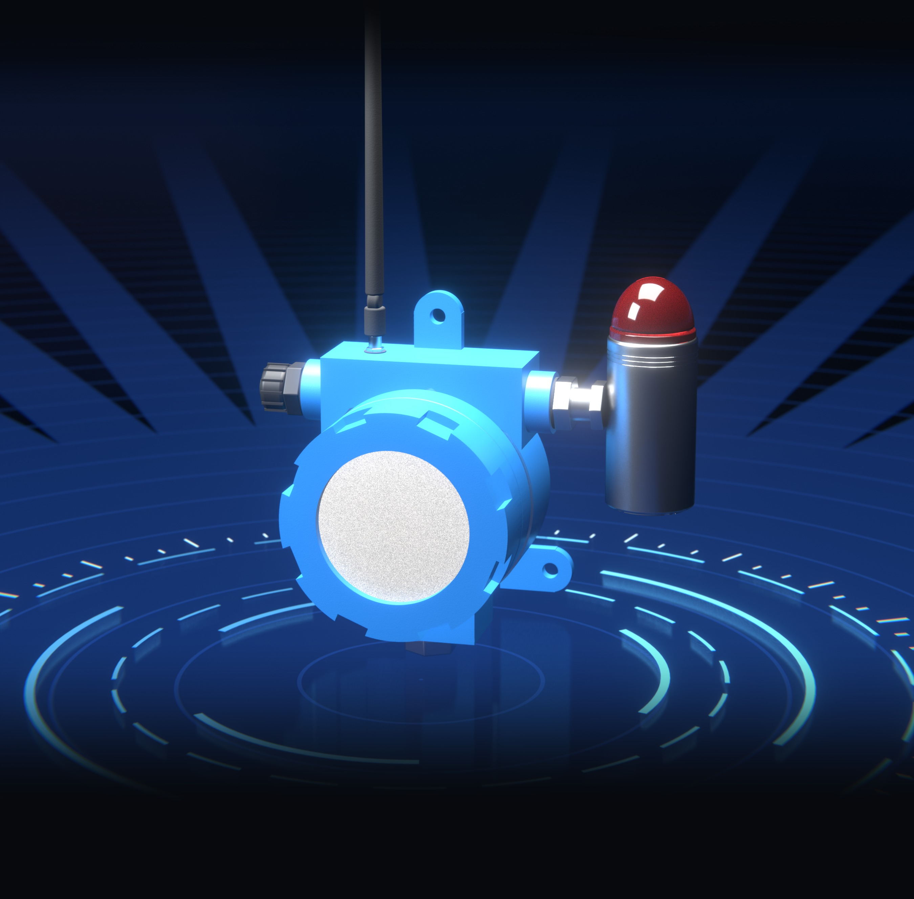
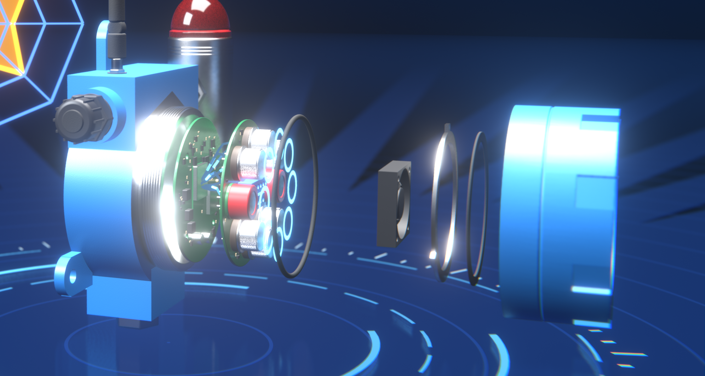
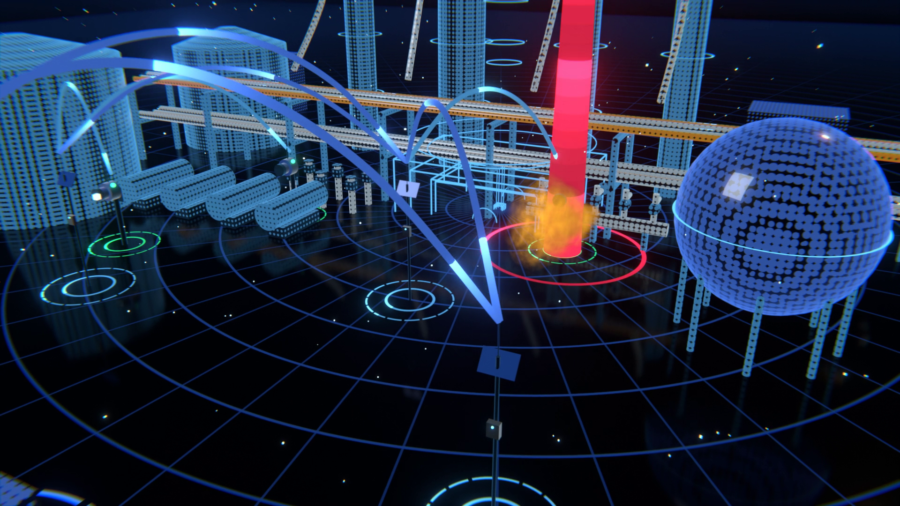
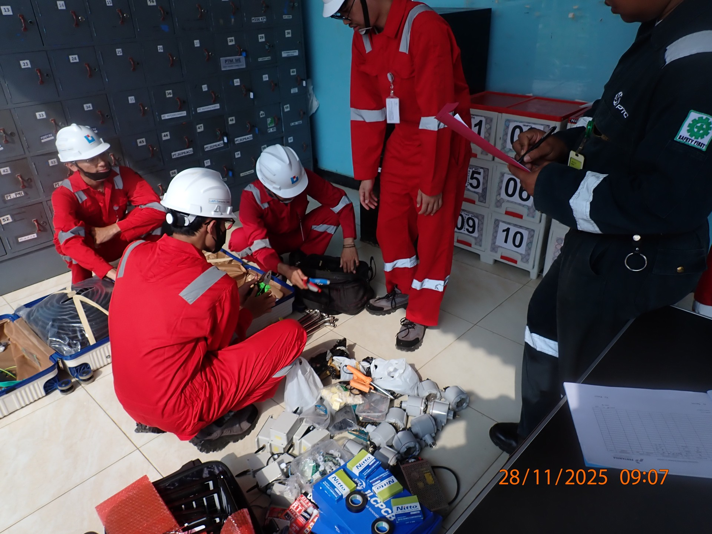
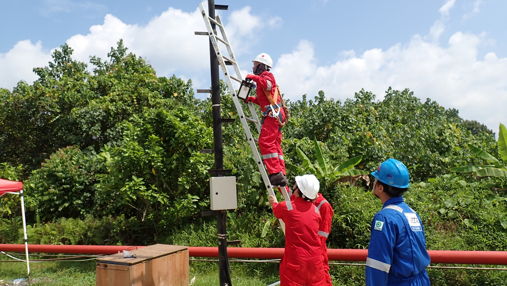
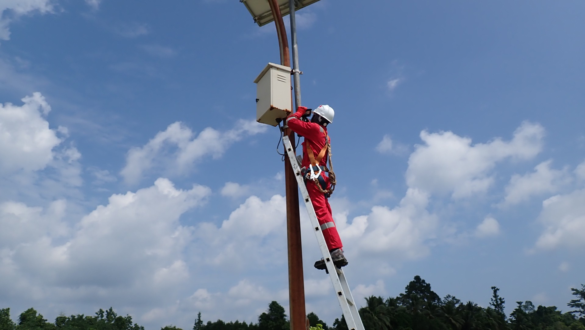
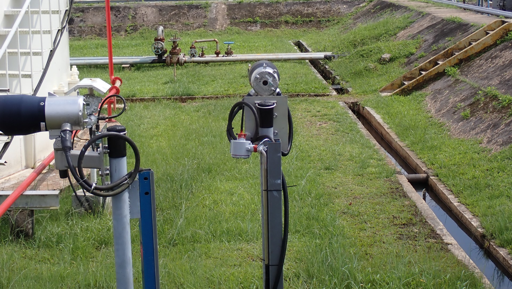
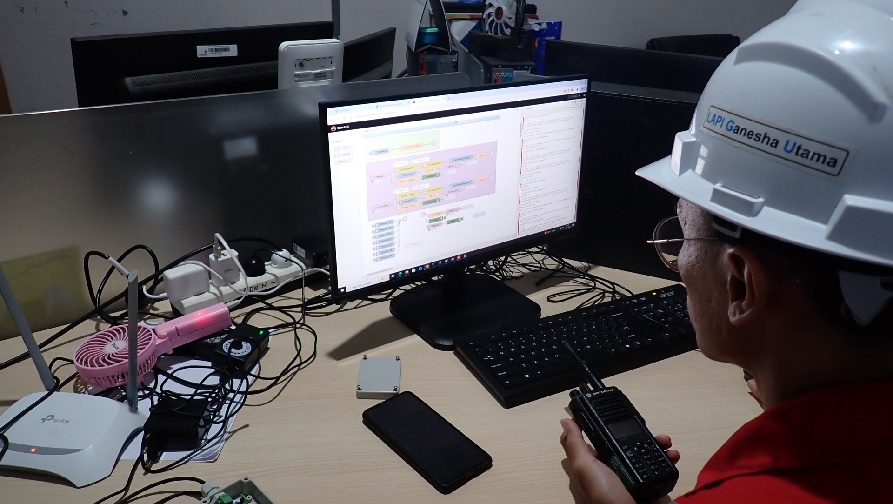
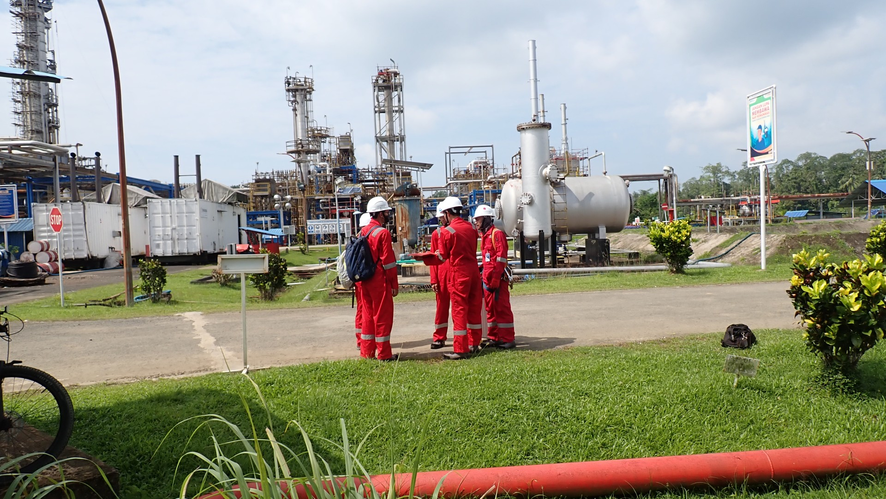

GAS LEAK DETECTION SYSTEM
GLD V2
Deteksi kebocoran gas multigas, cerdas, dan nirkabel untuk kilang.
PT Pertamina Patra Niaga (Fungsi Reliability)
LAPI Ganesha Utama · Institut Teknologi Bandung
Ilustrasi 3D
PERANGKAT
Sensor multigas.
Satu perangkat.
Satu GLD membaca pola respons sensor multigas, lalu AI di dalam perangkat mengenali jenis gasnya. Tanpa server, tanpa menunggu.

Model AICNN dua cabang · 8-bit · di perangkat
Prosesorinferensi AI on-device
Sensor multigasmetal-oxide · sidik jari multigas
Ilustrasi 3D GLD V2 terurai.
Sidik jari gasSensor metal-oxide membentuk pola khas untuk tiap gas.
AI di perangkatCNN dua cabang, 8-bit, berjalan langsung di mikrokontroler.
Alarm lokalBeacon pada perangkat menyala begitu gas terdeteksi.
SISTEM
Bocor terdeteksi.
Operator langsung tahu.
Data mengalir lewat jaringan mesh LoRa. Tanpa kabel data, tanpa internet. Bila satu jalur putus, rute pulih sendiri.

GLD→Cluster Head→Gateway→Server lokal→Dashboard
Self-healing networkBila satu Cluster Head terputus, data dialihkan otomatis lewat jalur lain.
Alarm push, seketikaTidak menunggu siklus pengambilan data; operator melihat lokasi dan tingkat risiko.
Ilustrasi 3D · dashboard memakai data demonstrasi.
TERUJI
Dari lab ke kilang.
7/7
Item Factory Acceptance Test lulus · GLD generasi kedua, laboratorium
8
Cluster Head mesh multi-hop dengan failover teruji · kampus ITB
2025
Uji lapangan RU VII Kasim, Nov–Des · GLD generasi pertama

Pemeriksaan perangkat bersama petugas K3

Pemasangan di tiang, disaksikan personel kilang

Pemasangan pada tiang ber-panel surya

GLD terpasang di area tangki

Pemantauan data dari ruang kontrol

Koordinasi tim di area kilang
Uji lapangan RU VII Kasim · November–Desember 2025 · GLD generasi pertama.
SPESIFIKASI
| Sensor | Multi sensor gas metal-oxide |
| Kecerdasan | CNN dua cabang, 8-bit, di perangkat |
| Komunikasi | LoRa, private mesh multi-hop |
| Catu daya | 24 VDC |
| Gas tervalidasi | LPG, H₂ |
| Pengembangan | CO₂ (data tersedia) · CH₄, CO, NH₃, Benzena (target) · model dilatih di lokasi |